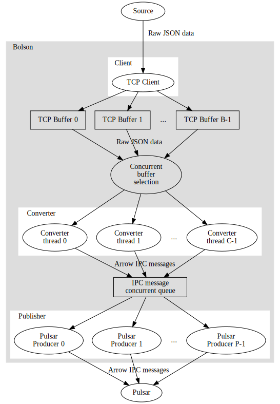
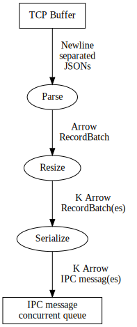

Introduction
Bolson is a tool that parses JSONs, converts them to records in an Apache Arrow formatted RecordBatch, serializes the batch to an Arrow IPC message, and publishes the message to a Pulsar topic.
Usage
This chapter describes how to use Bolson.
Requirements
To use Bolson, you need the following:
- A source of JSON data that acts as a TCP server. Bolson operates as long as the connection is alive.
- An Apache Pulsar broker.
- An Apache Arrow Schema
- Unless fixed schema parsing implementations are used, such as specific FPGA implementations.
Arrow Schema
For Bolson to read Arrow Schemas, they need to be serialized to a file using Arrow's built-in schema serialization facility.
An example of how to define and serialize a schema in Python:
import pyarrow
schema = pyarrow.schema([pyarrow.field("field", pyarrow.uint64())])
pyarrow.output_stream("example.as").write(schema.serialize())
JSON data source
If you do not have a JSON data source that can act as a TCP server, it is possible to generate random JSON data using a companion project of Bolson named Illex.
Illex is used throughout this example.
The requirements for a JSON data source acting as a TCP are simple. When Bolson
connects, the source can start sending data, without any additional protocol,
with the exception that each JSON object must be terminated by the newline
character '\n'.
Pulsar broker
If you do not have a Pulsar broker, it can easily be spawned locally using Docker:
docker run -it --rm -p 6650:6650 -p 8080:8080 apachepulsar/pulsar bin/pulsar standalone
Subcommands
Bolson knows two subcommands, stream and bench.
- Stream: Convert JSONs and publish them to Pulsar in a streaming fashion.
- Bench: Run micro-benchmarks of specific components of Bolson.
Stream
Produce Pulsar messages from a JSON TCP stream.
Usage: bolson stream [OPTIONS] [input]
Positionals:
input TEXT:FILE Serialized Arrow schema file for records to convert to.
Options:
-h,--help Print this help message and exit
--latency TEXT Enable batch latency measurements and write to supplied file.
--metrics TEXT Write metrics to supplied file.
--max-rows UINT=1024 Maximum number of rows per RecordBatch.
--max-ipc UINT=5232640 Maximum size of IPC messages in bytes.
--threads UINT=1 Number of threads to use for conversion.
-p,--parser ENUM:value in {arrow->0,opae-battery->1,opae-trip->2} OR {0,1,2}=0
Parser implementation. OPAE parsers have fixed schema and ignore schema supplied to -i.
-i,--input TEXT:FILE Serialized Arrow schema file for records to convert to.
--arrow-buf-cap UINT=16777216 Arrow input buffer capacity.
--arrow-seq-col=0 Arrow parser, retain ordering information by adding a sequence number column.
--battery-afu-id TEXT OPAE "battery status" AFU ID. If not supplied, it is derived from number of parser instances.
--battery-num-parsers UINT=8 OPAE "battery status" number of parser instances.
--battery-seq-col=0 OPAE "battery status" parser, retain ordering information by adding a sequence number column.
--trip-afu-id TEXT OPAE "trip report" AFU ID. If not supplied, it is derived from number of parser instances.
--trip-num-parsers UINT=4 OPAE "trip report" number of parser instances.
-u,--pulsar-url TEXT=pulsar://localhost:6650/ Pulsar broker service URL.
-t,--pulsar-topic TEXT=non-persistent://public/default/bolson
Pulsar topic.
--pulsar-max-msg-size UINT=5232640
--pulsar-producers UINT=1 Number of concurrent Pulsar producers.
--pulsar-batch Enable batching Pulsar producer(s).
--pulsar-batch-max-messages UINT=1000 Pulsar batching max. messages.
--pulsar-batch-max-bytes UINT=131072 Pulsar batching max. bytes.
--pulsar-batch-max-delay UINT=10 Pulsar batching max. delay (ms).
--host TEXT=localhost JSON source TCP server hostname.
--port UINT=10197 JSON source TCP server port.
Bench
Run micro-benchmarks on isolated pipeline stages.
Usage: bolson bench [OPTIONS] SUBCOMMAND
Options:
-h,--help Print this help message and exit
Subcommands:
client Run TCP client interface microbenchmark.
convert Run JSON to Arrow IPC convert microbenchmark.
queue Run queue microbenchmark.
pulsar Run Pulsar publishing microbenchmark.
Stream mode
Micro-benchmarks
Parsing
Pulsar producer
FPGA accelerated parsing
By default, Bolson parses and converts JSONs using Arrow's built-in JSON parser. Bolson can also run with FPGA-accelerated parsing enabled for specific, hard coded schemas.
Fletcher/Intel OPAE
Prerequisites
- A system set up according to the setup instructions for Fletcher OPAE.
- The correct bitstream for a specific Arrow schema & parser implementation.
Flash the bitstream
Make sure to first flash the bitstream. From the Fletcher OPAE guide:
Start the FPGA development environment container for the Intel Acceleration Stack (IAS).
cd path/to/bitstream
docker run -it --rm --privileged -v `pwd`:/src:ro ias:1.2.1
From the IAS container, program the FPGA with the bitstream and exit the container:
fpgaconf bitstream.gbs
exit
Enable huge pages
The current implementation of Fletcher OPAE based accelerators requires huge pages to be enabled.
On a CentOS system, they can be enabled by root users as follows:
sudo su
echo 32 | tee /sys/kernel/mm/hugepages/hugepages-1048576kB/nr_hugepages
exit
Run Bolson with FPGA-accelerated parser implementation
Run Bolson with the -p or --parser option followed by the name of the
implementation of to select which FPGA-accelerated parser implementation to use
for the respective subcommand (stream or bench convert).
To see which implementations are available, run Bolson
with <subcommand> --help.
Example:
bolson bench convert path/to/schema.as -p opae-battery
Design
This chapter describes the high-level architecture of Bolson.
Overview
Bolson consists of three major components:
- Client
- TCP client, connects to a data source acting as a TCP server. Places received TCP packets in buffers for conversion.
- Converter
- Parses JSON objects, converts them to Arrow RecordBatches, and serializes the RecordBatches as Arrow IPC messages. These IPC messages are pushed into a queue.
- Publisher
- Takes IPC messages from the queue and publishes them to a Pulsar topic.
An overview of the architecture of Bolson is shown below:

Client
The Client connects to a server through a TCP socket. As long as the connection exists, Bolson continues to operate. Upon the arrival of a TPDU, it's payload is stored in one of the B TCP buffers, whichever next buffer is not locked and empty in a round-robin fashion. If no buffers are available, no TPDUs will be received until a buffer becomes available.
Whenever a buffer is filled with data, before unlocking the buffer for
conversion, the client reverse scans the buffer for the newline character that
must proceed every JSON object. Any leftover bytes and characters in the buffer
will be carried over to the next buffer, such that a buffer always contains a
discrete number of JSONs. This assumes that the JSON data source will always
place a newline character '\n' behind every JSON.
Converter
The converter takes the contents of a TCP buffer, and parses the JSONs contained
within. JSONs are expected to be separated by whitespace, i.e. at the end of
each JSON, there must be a whitespace character '\n'. The JSON data is
converted to an Arrow RecordBatch (simply called batch from here on). This batch
is serialized as an Arrow IPC message, and pushed onto a concurrent queue.
Converters may be implemented as developers see fit, but the baseline software converter is a concurrent converter that can use multiple C threads to convert the data contained in the TCP buffers.
An overview of a converter thread is as follows:

- Parse
- To parse JSONs, Bolson uses the Apache Arrow JSON parsing functionality, which, at the time of writing, uses RapidJSON under the hood.
- Bolson also currently knows two FPGA-accelerated parser implementations that are described in following sections.
- Resize
- Because the size of a serialized batch can exceed the maximum size of a Pulsar message, it is necessary for converters to resize batches if they exceed the user-defined limit of a number of rows or a number of bytes. This is a zero-copy operation.
- Serialize
- This step serialized the resized batches to Arrow IPC messages and pushes the IPC messages into the concurrent queue.
Converter threads
The converter setup discussed so far converts the JSONs in one buffer to one Arrow RecordBatch, which is then potentially split up over K messages. The internal thread that manages this type of conversion is called the one-to-one converter thread.
Another setup is possible, where a converter thread can take data from all input buffers at the same time, and convert that to one RecordBatch before resizing. This thread is internally called the All-To-One converter thread and is spawned when a parser implementation provides multiple input buffers but notifies the converter that it should only spawn one thread.
The all-to-one approach is currently only used for an FPGA implementation where the circuitry from the hardware parsers to the host memory is relatively large in terms of area, but provides much higher throughput than a single parser can deliver, and it is therefore shared with multiple other hardware parsers. This way, the data for each parser working on each input buffer ends up in the same RecordBatch, hence it becomes an "all-to-one" parser implementation requiring an all-to-one converter thread.
Publisher
The publisher component pops Arrow IPC messages from the concurrent queue and publishes these Arrow IPC messages to a Pulsar topic. The implementation uses the Pulsar C++ client library.
To increase the throughput, it is possible to spawn P Pulsar producer threads to publish IPC messages from the queue concurrently.
If IPC messages are small, but many of them arrive every second, it is possible to reduce the overhead having the Pulsar producers apply batching. Note well that this always comes at the cost of increased latency.
Detailed documentation / Doxygen
Detailed documentation of the sources can be generated by running Doxygen from
the root of the repository. The output can then be accessed by
opening: doc/html/index.html
Design
This chapter describes the high-level architecture of Bolson.
Overview
Bolson consists of three major components:
- Client
- TCP client, connects to a data source acting as a TCP server. Places received TCP packets in buffers for conversion.
- Converter
- Parses JSON objects, converts them to Arrow RecordBatches, and serializes the RecordBatches as Arrow IPC messages. These IPC messages are pushed into a queue.
- Publisher
- Takes IPC messages from the queue and publishes them to a Pulsar topic.
An overview of the architecture of Bolson is shown below:

Client
The Client connects to a server through a TCP socket. As long as the connection exists, Bolson continues to operate. Upon the arrival of a TPDU, it's payload is stored in one of the B TCP buffers, whichever next buffer is not locked and empty in a round-robin fashion. If no buffers are available, no TPDUs will be received until a buffer becomes available.
Whenever a buffer is filled with data, before unlocking the buffer for
conversion, the client reverse scans the buffer for the newline character that
must proceed every JSON object. Any leftover bytes and characters in the buffer
will be carried over to the next buffer, such that a buffer always contains a
discrete number of JSONs. This assumes that the JSON data source will always
place a newline character '\n' behind every JSON.
Converter
The converter takes the contents of a TCP buffer, and parses the JSONs contained
within. JSONs are expected to be separated by whitespace, i.e. at the end of
each JSON, there must be a whitespace character '\n'. The JSON data is
converted to an Arrow RecordBatch (simply called batch from here on). This batch
is serialized as an Arrow IPC message, and pushed onto a concurrent queue.
Converters may be implemented as developers see fit, but the baseline software converter is a concurrent converter that can use multiple C threads to convert the data contained in the TCP buffers.
An overview of a converter thread is as follows:

- Parse
- To parse JSONs, Bolson uses the Apache Arrow JSON parsing functionality, which, at the time of writing, uses RapidJSON under the hood.
- Bolson also currently knows two FPGA-accelerated parser implementations that are described in following sections.
- Resize
- Because the size of a serialized batch can exceed the maximum size of a Pulsar message, it is necessary for converters to resize batches if they exceed the user-defined limit of a number of rows or a number of bytes. This is a zero-copy operation.
- Serialize
- This step serialized the resized batches to Arrow IPC messages and pushes the IPC messages into the concurrent queue.
Converter threads
The converter setup discussed so far converts the JSONs in one buffer to one Arrow RecordBatch, which is then potentially split up over K messages. The internal thread that manages this type of conversion is called the one-to-one converter thread.
Another setup is possible, where a converter thread can take data from all input buffers at the same time, and convert that to one RecordBatch before resizing. This thread is internally called the All-To-One converter thread and is spawned when a parser implementation provides multiple input buffers but notifies the converter that it should only spawn one thread.
The all-to-one approach is currently only used for an FPGA implementation where the circuitry from the hardware parsers to the host memory is relatively large in terms of area, but provides much higher throughput than a single parser can deliver, and it is therefore shared with multiple other hardware parsers. This way, the data for each parser working on each input buffer ends up in the same RecordBatch, hence it becomes an "all-to-one" parser implementation requiring an all-to-one converter thread.
Publisher
The publisher component pops Arrow IPC messages from the concurrent queue and publishes these Arrow IPC messages to a Pulsar topic. The implementation uses the Pulsar C++ client library.
To increase the throughput, it is possible to spawn P Pulsar producer threads to publish IPC messages from the queue concurrently.
If IPC messages are small, but many of them arrive every second, it is possible to reduce the overhead having the Pulsar producers apply batching. Note well that this always comes at the cost of increased latency.
Detailed documentation / Doxygen
Detailed documentation of the sources can be generated by running Doxygen from
the root of the repository. The output can then be accessed by
opening: doc/html/index.html